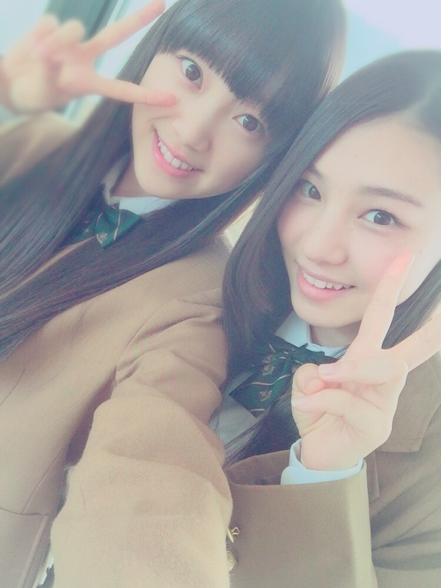
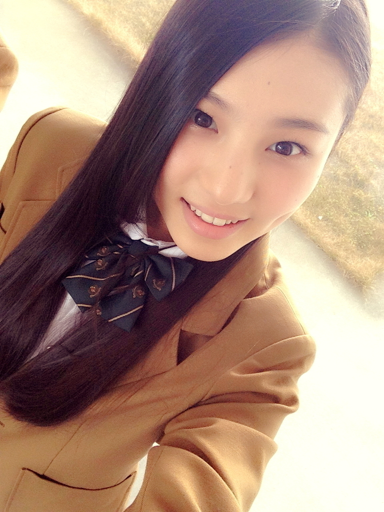
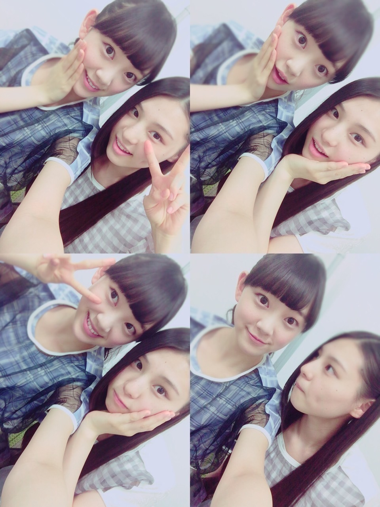

| 2015/03 03 Tue | ♡ カミナリの時だけいおり_ (．．*)vol.11 |
みなさんこんばんはー！
さがらいおりです！
この前メイクさんに
｢伊織ちゃんの唇って
お手本みたいな形してるよね｣
って言われたのー♡
初めて言われたし、
唇といったら純奈だから
嬉しかった(´,,•ω•,,)♡
もう 3 月ですね( ﾟｪﾟ)
早い、、
お披露目して 8 ヵ月
色々なことがあったけど
今までの人生で 1 番短く感じたなー
いおり、少し成長したかなー
ジャケ写いおり探してね～
どこかにいると思うから！

卒業生のみなさん
卒業おめでとうございます！
いおりは後 1 年後だー
それから、まだ受験終わってない方
もう少しだよね！？
頑張って下さい(っ `-´ c)‼
~いおり庵~
 安室さんのどうゆう所に一番ひかれる？
安室さんのどうゆう所に一番ひかれる？
一番は歌って踊れるところ
歌って踊るっていうことに関して
安室奈美恵さんを超える人はいないと思ってる！
ファンだからっていうのもあるのかな、、？
んー、でもやっぱり安室ちゃんが 1 番だよ
伊織との握手での注意事項は？
あ、あのね、
あんまり踏み込んだこと聞いてこなければ
なんでも大丈夫だよ(*^^)v
鹿児島に来たことある？
屋久島なら行ったことあるよ！
小さい頃だけど(>_<)
あと、小 6 の時の担任の先生が
鹿児島出身だった！
きばれ！
ってよく言ってた！！
昨日チャーリーとチョコレート工場と
パイレーツオブカリビアンのワールドエンド
買ってきたの♪♪
今日さっそく
チャーリーとチョコレート工場見たんだ～♡
久しぶりに見たんだけど
飽きなくて面白いの *˙︶˙*)ﾉ"
一番好きなシーンは
ウィリー・ウォンカの登場前の歌が終わって
火花散ってお人形が燃えちゃう所、、
あと、今度友達とお笑い行く約束したの(´,,•ω•,,)♡
マネージャーさんにも
お笑い詳しい人いてよく話聞いてるんだー♡♡

マネージャーさんはゆったり感さんが
好きなんだってさ！
だからネタライブとか
行きたーい！！
あとあと、
今日はひな祭りだー♡
夜ご飯はちらし寿司！！
ちらし寿司好きー：）
というか酢飯が好き！
小学校の時に
友達とおかわりは恥ずかしいから
給食係の子に
多めにしてってこっそり頼んでた、///
帰ったら食べようっと♪♪
そして、今日はお姉ちゃんが
卒業旅行から帰ってくる日です。

i o r i .

コメント(326)
2015/03/03 21:24